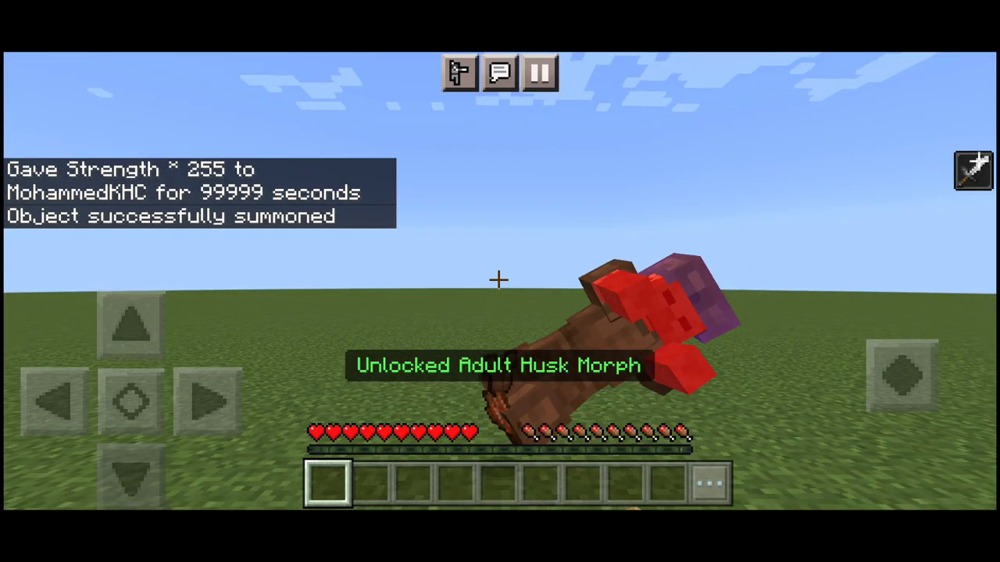
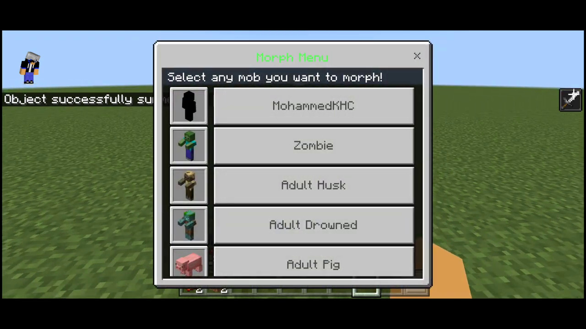
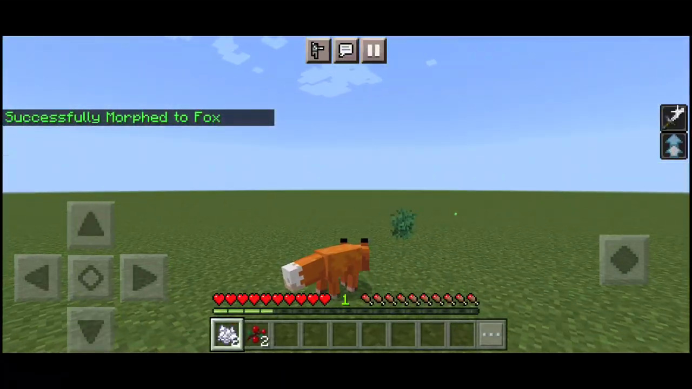
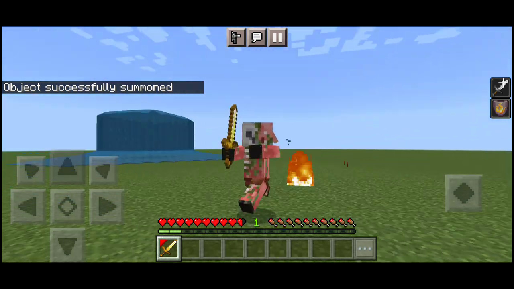
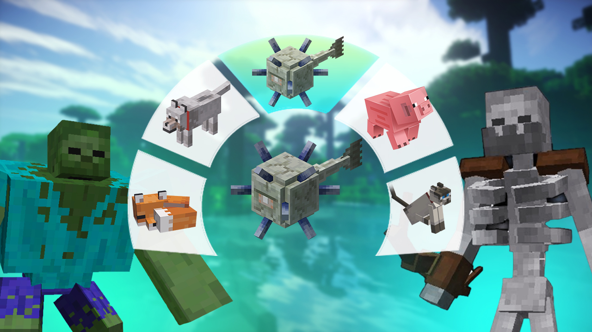
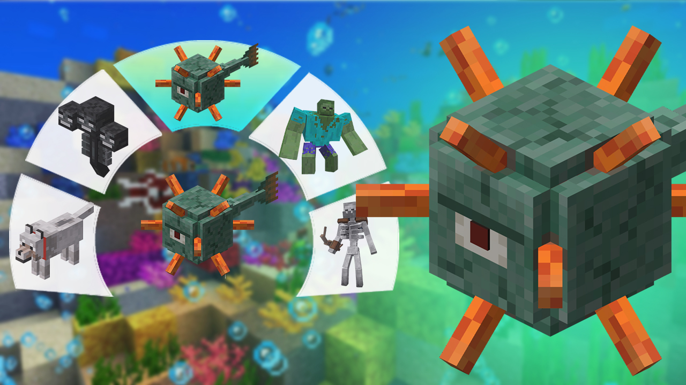
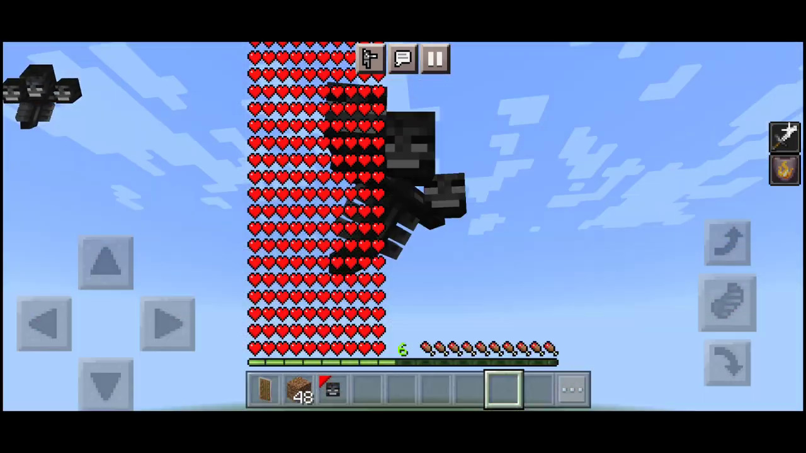
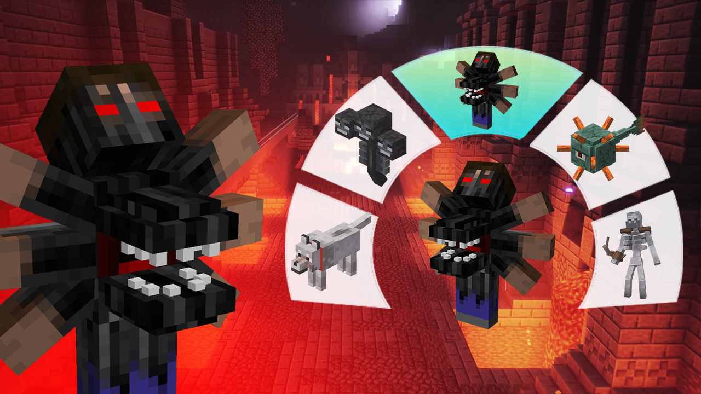
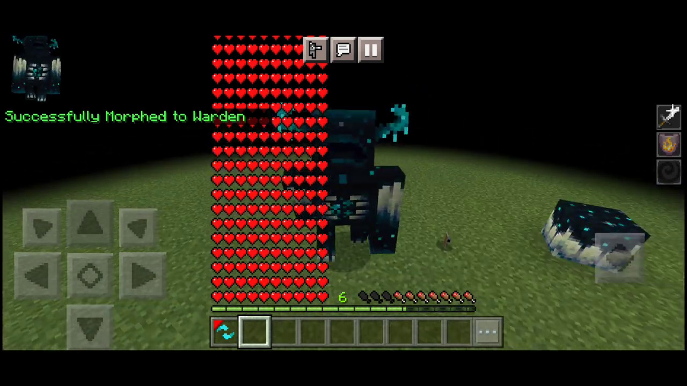

Morph Plus Add-on V5
Add-on for the official Minecraft Pocket Edition
Minecraft PE 1.18 Minecraft PE 1.19 Latest
Have you ever dreamed of turning into zombie, skeleton, husk or fox in Minecraft? This add-on will make your dream comes real.
Morph Mod turns your Minecraft avatar into one of supported mobs. You can easily manipulate this kind of morphing and enjoy new lifes in Minecraft.
Now you can easily change your entire look and play as various rare and fun mobs in Minecraft. From fox to wither and even the wander.
As usually, you have to install all required files in Minecraft and then follow carefully the instruction.
Credits
- MohammedKHC
Current version
1.1.6
What is a Mod or an Add-on?
An add-on for Minecraft is a special set of files. Typically this set contains two files: a behaviour pack and a resource pack.
Once loaded in Minecraft and applied according to guides and instructions, those files provide various new game features. It is common that such add-ons provide new items, new skins and textures, new mini-games available inside the Minecraft world.
Some add-ons comes bundled into a single file called .mcaddon. Add-ons of these type provide the same features as ones coming in resource pack and behaviour packs separated. It is up to add-on's author how to bundle and distribute his creations.
Exact content of the Minecraft add-ons is controlled by the author of the add-on.
Files has been packaged into an add-on are interpreted by the Minecraft engine. They work the same way as any other features in the Minecraft game itself. They can't make any harm to the user's device or damage user's files, because most of them are not executable on any OS except the Minecraft itself.
A process of creating such add-ons called modding. Likewise modding a car or modding a smartphone, modding makes the game more personalized. For example, there are some add-ons enhancing an in-game graphics or changing how mobs behave in game.
This page is dedicated to add-ons those enable various guns in Minecraft. Minecraft players can enjoy shooting and war games in Minecraft worlds by applying this add-ons in Minecraft and enable them for their worlds.
Get started
Once you downloaded all corresponding files it's time to get your hands dirty (ofc for the great good!). Follow the steps below to get add-on work in the Minecraft.
- First, open every file using the system "Open in..." dialog in the Minecraft Pocket Edition.
- Next, create a new world. Please notice that all experimental gameplay features should be enabled.
- Choose behaviour packs and resource pack installed from the pane on the left side.
- Start the newly created world.
- You have to open a console in the game to type-in various commands to enable add-on items and get them in game.
Follow the detailed guide below to enable guns and other items from the add-on.
Whom can I morph into?
Morph Mod enables special abilities to your player those seem natural for mobs in game itself. For example, Warden has 250 HP and is ignored by monsters. While Fox has a huge jump. Axolotl can breathe under water and Witch can throw splash potions!
There are endless opportunities could be explored when play with this mod enabled! This add-on enables 33 options to morph into!
The full list of mobs you can morph into contains 33 mobs: Zombie, Husk, Dorwned, Zombie Pigman, Enderman, Skeleton, Stray, Wither Skeleton, Creeper, Blaze, Cow, Pig, Sheep, Chicken, Spider, Iron Golem, Villager, Wolf, Cat, Bat, Slime, Snow Golem, Ghast, Vex, Bee, Horse, Witch, Axolotl, Shulker, Fox, Wither, Allay, Warden.
Let's start morphing!
Morphing requires killing the mob, so we need an enormous strength first
To get 99999 strengh, type in console: /effect @s strength 99999 255 true
Now let's summon a Husk and kill him instantly. All you need to do that is to type in few commands in console.
To summon a Husk, type: /summon husk

Now you can morph into Husk! Sneak and jump to open up a Morph Menu.

To open the Morph Menu just: sneak and jump!
There are two ways to open the Morph Menu. First one, "Sneak and Jump" sometimes doesn't work as expected. So you may prefer the related command in the console.
Morph Menu is not just a way to morph into some mob. It is a way to morph out, return back to your normal player look and feel.
Sneak and jump hasn't worked? Try typing in console /mm and follow on screen hints!
Try morphing into Fox! Just summon Fox, then kill her and then morph using the Morph Menu. Here is how all of that looks in the end. Isn't it a funny trick? 😂

Mobs special abilities
As we said above, every mob has special abilities. Morphing into mobs gives special abilities to your player too. It is really worth to try it out!
Zombie

Ignored By monsters Attacked by Iron Golems Attack damage = 1.5 hearts Killing a villager cause his zombification Burns in day lightHusk
Ignored By monsters Attacked by Iron Golems Taller than 2 blocks Attack damage = 1.5 hearts Killing a villager cause his zombification Give Hunger effect to targetDrowned
Ignored By monsters Attacked by Iron Golems Attack damage = 1.5 hearts Killing a villager cause his zombification Burns in day light Breath in water Fast Swim
Zombie Pigman
Ignored By monsters Attacked by Iron Golems Attack damage = 2.5 hearts Killing a villager cause his zombification Immune to fire and lava Have Golden swordEnderman
Ignored By monsters Attacked by Iron Golems Life = 20 hearts Attack damage = 3.5 hearts Height 3 blocks, you can't pass trough door Can TeleportSkeleton
Ignored By monsters Attacked by Iron Golems Attack damage = 1.5 hearts Burns in day light Have BowStray
Ignored By monsters Attacked by Iron Golems Attack damage = 1.5 hearts Burns in day light Have Bow
Wither Skeleton

Ignored By monsters Attacked by Iron Golems Attack damage = 2 hearts Immune to fire and lava taller than 2 blocks Have Stone sword Give Wither effect to targetCreeper
Ignored by monsters Long press with Explode item to explodeBlaze
Ignored by monsters Attacked by iron golems Attack damage = 3 hearts Immune to fire and lava Can fly if you activate Education Edition You can shoot fire with Fire Shooter
Cow
Ignored by monsters Life = 5 hearts Can get milk from yourselfPig
Ignored by monsters Life = 5 hearts Shorter than 1 block
Sheep
Usually ignored by monsters Life = 4 hearts Can grazing Grass if you Sneak and lock at ground Can get wool from yourself
Chicken
Ignored by monsters Life = 2 hearts Shorter than 1 block Drops eggs between 300 to 600 secondSpider
Ignored by monsters Life = 8 hearts If you sneak you will start climbIron Golem
Life = 50 hearts Attack damage varies between 7 and 21 Knockback resistanceKnockback mobs
3 blocks tall 1.5 blocks large Don't have fall damageVillager
Only zombies will attack you Shorter than 1 block If you sneak and long press in the ground you will trade with yourselfWolf
Ignored by monsters Life = 3 hearts Shorter than 1 block If you sneak you will set
Cat
Ignored by monsters Shorter than 1 block If you sneak you will set Don't have fall damage Creepers are afraid of youBat
Ignored by monsters Life = 6 hearts Have Night vision effect Can fly if you activate Education Edition
Slime
Life = 8 hearts Ignored By monsters Attacked by Iron Golems Attack damage = 2 hearts Divide when he diesSnow Golem
Life = 2 hearts Attack damage = 1 hearts Set Snow layer where you walk Don't have Fall damage You can shoot Snowball with Snowball ShooterGhast
Life = 5 hearts Ignored By monsters Attacked by Iron Golems Attack damage = 1 hearts Immune to fire and lava Don't have Fall damage Can fly if you activate Education Edition You can shoot fire with Fire Shooter
Vex
Life = 7 hearts Ignored By monsters Attacked by Iron Golems Attack damage = 1.5 hearts Can go spectator if you Sneak and tap on the ground Immune to fire and lava Don't have Fall damage Have Iron swordBee
Life = 5 hearts Ignored By monsters Attacked by Iron Golems Attack damage = 1 hearts Can go into Bee nest if you jumping and stand under Bee nest block Give Poison effect to targetHorse
Life varies between 7.5 and 15 hearts Have andom jump Ignored By monsters Can put Saddle on yourself if you hold it in your hand and click on the ground Other Players will can ride you if you put Saddle on yourself
Witch
Life = 13 hearts Attack damage = 2 hearts Can Throw Splash Potions Get Potions when take high damageAxolotl
Life = 7 hearts Ignored By monsters Your friends can catch you in the bucket if long press while hold Water Bucket on you Attack damage = 2 hearts Breath in water Very fast Swim die after 5 minutes if don't go to waterShulker
Life = 15 hearts Ignored By monsters Attacked by Iron Golems Attack damage = 1.5 hearts Can shoot Shulker bullets Random tp when take high damage
Fox
Life = 10 hearts Ignored By monsters Attack damage = 2 hearts Have high jump If jump on a smaller thing (like Chicken, Fish, Small Turtle) will kill itWither

Life = 300 hearts Ignored By monsters Attacked by Iron Golems Immune to fire and lava Don't take Fall damage Dont take damage from undead mobs Can fly if you activate Education Edition Can shoot Wither Skull for three times then can shoot one Dangerous Wither Skull When Morphing to it you will need to wait 10 seconds while it summoned
Allay
Ignored By monsters Don't take Fall damage Can fly if you activate Education Edition Can find any item that dropped on the ground and on your inventory (at 50 block radius)Warden

Life = 250 hearts Ignored By monsters Attacked by Iron Golems Immune to fire and lava Attack damage = 15 hearts Has knockback resistance Can shoot Sonic Boom Every 6 seconds if there's an player near you it will roar and give Darkness effect to the player
DISCLAIMER
IT IS NOT AN OFFICIAL MINECRAFT PRODUCT. NOT APPROVED BY OR ASSOCIATED WITH MOJANG.
The Minecraft name, the Minecraft brand, and Minecraft is the property of Mojang AB or a respected owner.
With respect to Mojang Brand Guidelines